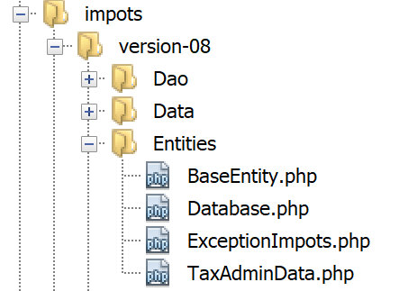

18. Practical Exercise – version 8
We will revisit the sample application – version 5 (link paragraph) and turn it into a client/server application.
18.1. Introduction
The architecture of version 5 was as follows:

- the layer called [dao] (Data Access Objects) handles communication with the MySQL database and the local file system;
- the layer named [métier] performs the tax calculation;
- the main script acts as the orchestrator: it instantiates the layers [dao] and [métier], then communicates with the layer [métier] to perform the necessary tasks;
We will migrate this architecture to the following client/server architecture:

- In [2], we will reuse the [dao] layer from version by removing the methods for accessing the local file system. These methods will be migrated to the [dao] layer of the [6, 7] client;
- in [3], the [métier] layer will remain that of version 5 without its [executeBatchImpôts, saveResults] methods, which migrate to the [dao] [7] layer of the client ;
- In [4], the server script must be written: it will need to:
- create the layers [métier], [dao], and [3, 2];
- communicate with the client script [5, 7];
- In [7], the client layer [dao] must be written:
- it will be a client HTTP of the server script [4, 5];
- it will inherit the methods for accessing the local file system from the [dao] layer of version 5;
- In [8], the client’s [métier] layer will conform to the [InterfaceMetier] interface of version 5. Its implementation will, however, be different. In version 5, the [métier] layer performed the tax calculation. Here, it is the server’s [métier] layer that performs this calculation. The [métier] layer will therefore call upon the [dao] and [7] layers to communicate with the server and request that it calculate the tax;
- in [9], the console script will need to instantiate the client layers [dao, métier] and launch their execution;
18.2. The server
We are focusing on the server side of the application.

This architecture will be implemented by the following scripts:

18.2.1. The entities exchanged between the layers

The entities exchanged between the layers are those of version 5, as described in the "Link" section.
18.2.2. The [dao] layer

The [dao] layer implements the following [InterfaceServerDao] interface:
<?php
// namespace
namespace Application;
interface InterfaceServerDao {
// reading tax administration data
public function getTaxAdminData(): TaxAdminData;
}
- line 9: the [getTaxAdminData] method retrieves data from the tax administration database;
The [InterfaceServerDao] interface is implemented by the following [ServerDao] class:
<?php
// namespace
namespace Application;
// definition of a ImpotsWithDataInDatabase class
class ServerDao implements InterfaceServerDao {
// the TaxAdminData object containing tax bracket data
private $taxAdminData;
// the [Database] type object containing the characteristics of the BD
private $database;
// manufacturer
public function __construct(string $databaseFilename) {
// store the JSON configuration of the bd
$this->database = (new Database())->setFromJsonFile($databaseFilename);
// we prepare the attribute
$this->taxAdminData = new TaxAdminData();
try {
// open the database connection
$connexion = new \PDO($this->database->getDsn(), $this->database->getId(), $this->database->getPwd());
// we want every SGBD error to trigger an exception
$connexion->setAttribute(\PDO::ATTR_ERRMODE, \PDO::ERRMODE_EXCEPTION);
// start a transaction
$connexion->beginTransaction();
// fill in the tax bracket table
$this->getTranches($connexion);
// fill in the constants table
$this->getConstantes($connexion);
// the transaction is completed successfully
$connexion->commit();
} catch (\PDOException $ex) {
// is there a transaction in progress?
if (isset($connexion) && $connexion->inTransaction()) {
// transaction ends in failure
$connexion->rollBack();
}
// trace the exception back to the calling code
throw new ExceptionImpots($ex->getMessage());
} finally {
// close the connection
$connexion = NULL;
}
}
// reading data from the database
private function getTranches($connexion): void {
…
}
// reading the constants table
private function getConstantes($connexion): void {
…
}
// returns data for tax calculation
public function getTaxAdminData(): TaxAdminData {
return $this->taxAdminData;
}
}
This code was presented in the linked section.
18.2.3. The [métier] layer
The [métier] layer implements the following [InterfaceServerMetier] interface:
<?php
// namespace
namespace Application;
interface InterfaceServerMetier {
// calculating a taxpayer's taxes
public function calculerImpot(string $marié, int $enfants, int $salaire): array;
}
The [InterfaceServerMetier] interface is implemented by the following [ServerMetier] class:
<?php
// namespace
namespace Application;
class ServerMetier implements InterfaceServerMetier {
// layer Dao
private $dao;
// tax administration data
private $taxAdminData;
//---------------------------------------------
// setter layer [dao]
public function setDao(InterfaceServerDao $dao) {
$this->dao = $dao;
return $this;
}
public function __construct(InterfaceServerDao $dao) {
// we store a reference on the [dao] layer
$this->dao = $dao;
// recover data for tax calculation
// method [getTaxAdminData] may throw a ExceptionImpots exception
// we then let it go back to the calling code
$this->taxAdminData = $this->dao->getTaxAdminData();
}
// tAX CALCULATION
// --------------------------------------------------------------------------
public function calculerImpot(string $marié, int $enfants, int $salaire): array {
…
// result
return ["impôt" => floor($impot), "surcôte" => $surcôte, "décôte" => $décôte, "réduction" => $réduction, "taux" => $taux];
}
// --------------------------------------------------------------------------
private function calculerImpot2(string $marié, int $enfants, float $salaire): array {
…
// result
return ["impôt" => $impôt, "surcôte" => $surcôte, "taux" => $coeffR[$i]];
}
// revenuImposable=annualwage-discount
// the allowance has a minimum and a maximum
private function getRevenuImposable(float $salaire): float {
…
// result
return floor($revenuImposable);
}
// calculates any discount
private function getDecôte(string $marié, float $salaire, float $impots): float {
…
// result
return ceil($décôte);
}
// calculates any reduction
private function getRéduction(string $marié, float $salaire, int $enfants, float $impots): float {
..
// result
return ceil($réduction);
}
}
This code has already been discussed in version 1 in the linked section. Its version object with a database was presented in the linked section.
18.2.4. The server script

The server script implements the [web] [4] layer. The [impots-server] script is configured by the following jSON [config-server.json] file:
{
"rootDirectory": "C:/myprograms/laragon-lite/www/php7/scripts-web/impots/version-08",
"databaseFilename": "Data/database.json",
"taxAdminDataFileName": "Data/taxadmindata.json",
"relativeDependencies": [
"/Entities/BaseEntity.php",
"/Entities/ExceptionImpots.php",
"/Entities/TaxAdminData.php",
"/Entities/Database.php",
"/Dao/InterfaceServerDao.php",
"/Dao/ServerDao.php",
"/Métier/InterfaceServerMetier.php",
"/Métier/ServerMetier.php"
],
"absoluteDependencies": ["C:/myprograms/laragon-lite/www/vendor/autoload.php"],
"users": [
{
"login": "admin",
"passwd": "admin"
}
]
}
- line 1: the root directory from which file paths will be measured;
- line 2: the jSON configuration file for the MySQL database;
- line 3: the jSON file containing tax administration data;
- lines 5–14: the application files;
- line 15: the dependency on third-party libraries, in this case Symfony;
- lines 16–20: the table of users authorized to use the application;
The files jSON and [database.json, taxadmindata.json] are those of version 5 described in the link section.
The [impots-server] script implements the [web] layer as follows:
<?php
// strict adherence to declared types of function parameters
declare (strict_types=1);
// namespace
namespace Application;
// error handling by PHP
//ini_set("display_errors", "0");
//
// configuration file path
define("CONFIG_FILENAME", "Data/config-server.json");
// we retrieve the configuration
$config = \json_decode(file_get_contents(CONFIG_FILENAME), true);
// include the necessary script dependencies
$rootDirectory = $config["rootDirectory"];
foreach ($config["relativeDependencies"] as $dependency) {
require "$rootDirectory$dependency";
}
// absolute dependencies (third-party libraries)
foreach ($config["absoluteDependencies"] as $dependency) {
require "$dependency";
}
// definition of constants
define("DATABASE_CONFIG_FILENAME", $config["databaseFilename"]);
//
// symfony dependencies
use \Symfony\Component\HttpFoundation\Response;
use \Symfony\Component\HttpFoundation\Request;
// prepare JSON server response
$response = new Response();
$response->headers->set("content-type", "application/json");
$response->setCharset("utf-8");
// retrieve the current query
$request = Request::createFromGlobals();
// authentication
$requestUser = $request->headers->get('php-auth-user');
$requestPassword = $request->headers->get('php-auth-pw');
// does the user exist?
$users = $config["users"];
$i = 0;
$trouvé = FALSE;
while (!$trouvé && $i < count($users)) {
$trouvé = ($requestUser === $users[$i]["login"] && $users[$i]["passwd"] === $requestPassword);
$i++;
}
// set the response status code
if (!$trouvé) {
// not found - code 401
$response->setStatusCode(Response::HTTP_UNAUTHORIZED);
$response->headers->add(["WWW-Authenticate" => "Basic realm=" . utf8_decode("\"Serveur de calcul d'impôts\"")]);
// error msg
$response->setContent(\json_encode(["réponse" => ["erreur" => "Echec de l'authentification [$requestUser, $requestPassword]"]], JSON_UNESCAPED_UNICODE));
$response->send();
// end
exit;
}
// we have a valid user - we check the parameters received
$erreurs = [];
// you need three parameters GET
$method = strtolower($request->getMethod());
$erreur = $method !== "get" || $request->query->count() != 3;
// mistake?
if ($erreur) {
$erreurs[] = "Méthode GET requise avec les seuls paramètres [marié, enfants, salaire]";
}
// we recover marital status
if (!$request->query->has("marié")) {
$erreurs[] = "paramètre marié manquant";
} else {
$marié = trim(strtolower($request->query->get("marié")));
$erreur = $marié !== "oui" && $marié !== "non";
// mistake?
if ($erreur) {
$erreurs[] = "paramètre marié [$marié] invalide";
}
}
// the number of children
if (!$request->query->has("enfants")) {
$erreurs[] = "paramètre enfants manquant";
} else {
$enfants = trim($request->query->get("enfants"));
// number of children must be an integer >=0
$erreur = !preg_match("/^\d+$/", $enfants);
// mistake?
if ($erreur) {
$erreurs[] = "paramètre enfants [$enfants] invalide";
}
}
// we recover the annual salary
if (!$request->query->has("salaire")) {
$erreurs[] = "paramètre salaire manquant";
} else {
// salary must be an integer >=0
$salaire = trim($request->query->get("salaire"));
$erreur = !preg_match("/^\d+$/", $salaire);
// mistake?
if ($erreur) {
$erreurs[] = "paramètre salaire [$salaire] invalide";
}
}
// other parameters in the query?
foreach (\array_keys($request->query->all()) as $key) {
// valid parameter?
if (!\in_array($key, ["marié", "enfants", "salaire"])) {
$erreurs[] = "paramètre [$key] invalide";}
}
// mistakes?
if ($erreurs) {
// an error code 400 is sent to the customer
$response->setStatusCode(Response::HTTP_BAD_REQUEST);
$response->setContent(json_encode(["réponse" => ["erreurs" => $erreurs]], JSON_UNESCAPED_UNICODE));
$response->send();
exit;
}
// we have everything you need to work
// server architecture creation
$msgErreur = "";
try {
// creation of the [dao] layer
$dao = new ServerDao($config["databaseFilename"]);
// creation of the [business] layer
$métier = new ServerMetier($dao);
} catch (ExceptionImpots $ex) {
// we note the error
$msgErreur = utf8_encode($ex->getMessage());
}
// mistake?
if ($msgErreur) {
// an error code 500 is sent to the customer
$response->setStatusCode(Response::HTTP_INTERNAL_SERVER_ERROR);
$response->setContent(\json_encode(["réponse" => ["erreur" => $msgErreur]], JSON_UNESCAPED_UNICODE));
$response->send();
exit;
}
// tAX CALCULATION
$result = $métier->calculerImpot($marié, (int) $enfants, (int) $salaire);
// we return the answer
$response->setContent(json_encode(["réponse" => $result], JSON_UNESCAPED_UNICODE));
$response->send();
Comments
- line 16: we load the configuration file;
- lines 18–26: load all dependencies;
- line 29: the name of the file [database.json];
- lines 32–33: declare the classes from the third-party libraries to be used;
- lines 36–38: prepare a response named jSON;
- lines 40-52: verify that the user making the request is indeed an authorized user;
- lines 54-63: if not, we send the 401 status code HTTP, which indicates access denied. Upon receiving this code and the header HTTP [WWW-Authenticate => Basic realm=], most browsers display an authentication window prompting the user to authenticate;
- line 59: the server’s response jSON explains the cause of the error. All server responses will be the string jSON from an array [‘réponse’=>’qq chose’];
- lines 64–117: the validity of the request is verified:
- a request GET with exactly three parameters;
- a parameter [marié] whose value must be ‘yes’ or ‘no’;
- a parameter [enfants] whose value must be an integer >=0;
- a parameter [salaire] whose value must be an integer >= 0;
- line 65: each time an error is detected, an error message is added to the array [$erreurs];
- lines 120–126: if an error occurs, the code HTTP [400 Bad Request] is sent to the client (line 122);
- line 123: the server’s response jSON explains the cause of the error;
- Starting from line 132, everything has been verified. We can instantiate the [dao, métier] layers. This instantiation has a cost and should only be performed if we are certain the request is valid;
- lines 130–138: the server architecture is created. Constructing the [dao] layer may throw a [ExceptionImpots] exception. If this exception occurs, the error is logged;
- lines 135–138: if an exception occurred, then we send the HTTP 500 code to the client. This code indicates that the server has crashed;
- line 143: the response explains the cause of the error;
- line 148 : the tax calculation is delegated to the [métier] layer;
- lines 150–151: sending the response;
Let’s test this script with a browser. Let’s request the secure URL [https://localhost:443/php7/scripts-web/impots/version-08/impots-server.php?marié=oui&enfants=5&salaire=100000]:

- in [1], the requested secure URL;
- in [2], the three parameters [marié, enfants, salaire];
- in [3], Laragon’s Apache server sent a self-signed certificate SSL. The browser detected this and displays a security warning: it considers the server’s site to be untrustworthy;
- in [4], we continue;

- In [6], we continue;

- In [7], the browser displays a window for the user to authenticate;
- in [9,10], we enter [admin] and [admin];

- In [13], the server’s response is jSON;
Let’s run some error tests:
We request URL [https://localhost/php7/scripts-web/impots/version-08/impots-server.php?marié=x&enfants=x&salaire=x&w=x]
We get the following result:

We remove SGBD MySQL and request URL [https://localhost/php7/scripts-web/impots/version-08/impots-server.php?marié=oui&enfants=3&salaire=60000]:

18.2.5. [Codeception] Tests
Each time we build a new version from the server, we will test the [métier] and [dao] layers as has been done since version 04 (see paragraphs link and link).
First, we associate the [scripts-web] project with the [Codeception] tests. To do this, follow the same procedure used for the [scripts-console] project in the link paragraph. We obtain a project [scripts-web] with a folder [Test Files]:

We will create a test for layer [dao] and one for layer [métier].
18.2.5.1. Tests for layer [dao]

The [ServerDaoTest] test will be as follows:
<?php
// strict adherence to declared types of function parameters
declare (strict_types=1);
// namespace
namespace Application;
// definition of constants
define("ROOT", "C:/myprograms/laragon-lite/www/php7/scripts-web/impots/version-08");
// configuration file path
define("CONFIG_FILENAME", ROOT . "/Data/config-server.json");
// we retrieve the configuration
$config = \json_decode(\file_get_contents(CONFIG_FILENAME), true);
// include the necessary script dependencies
$rootDirectory = $config["rootDirectory"];
foreach ($config["relativeDependencies"] as $dependency) {
require "$rootDirectory$dependency";
}
// absolute dependencies (third-party libraries)
foreach ($config["absoluteDependencies"] as $dependency) {
require "$dependency";
}
// test -----------------------------------------------------
class ServerDaoTest extends \Codeception\Test\Unit {
// TaxAdminData
private $taxAdminData;
public function __construct() {
// parent
parent::__construct();
// we retrieve the configuration
$config = \json_decode(\file_get_contents(CONFIG_FILENAME), true);
// creation of the [dao] layer
$dao = new ServerDao(ROOT . "/" . $config["databaseFilename"]);
$this->taxAdminData = $dao->getTaxAdminData();
}
// tests
public function testTaxAdminData() {
…
}
}
Comments
- lines 9–24: We set up the same working environment as that of the [impots-server.php] server. This is done in lines 9–12 by defining the two constants on which the environment depends;
- lines 32–40: we create an instance of the [dao] layer to be tested, as was done in the [impots-server.php] server script;
- From this point on, we are under the same conditions as the server script [impots-server.php]: we can start the tests;
- lines 43–45: the [testTaxAdminData] method is the one described in the link section;
The test results are as follows:

18.2.5.2. [métier] layer tests

The [ServerMetierTest] test will be as follows:
<?php
// strict adherence to declared types of function parameters
declare (strict_types=1);
// namespace
namespace Application;
// definition of constants
define("ROOT", "C:/myprograms/laragon-lite/www/php7/scripts-web/impots/version-08");
// configuration file path
define("CONFIG_FILENAME", ROOT . "/Data/config-server.json");
// we retrieve the configuration
$config = \json_decode(\file_get_contents(CONFIG_FILENAME), true);
// include the necessary script dependencies
$rootDirectory = $config["rootDirectory"];
foreach ($config["relativeDependencies"] as $dependency) {
require "$rootDirectory$dependency";
}
// absolute dependencies (third-party libraries)
foreach ($config["absoluteDependencies"] as $dependency) {
require "$dependency";
}
// test class
class ServerMetierTest extends \Codeception\Test\Unit {
// business layer
private $métier;
public function __construct() {
parent::__construct();
// we retrieve the configuration
$config = \json_decode(\file_get_contents(CONFIG_FILENAME), true);
// creation of the [dao] layer
$dao = new ServerDao(ROOT . "/" . $config["databaseFilename"]);
// creation of the [business] layer
$this->métier = new ServerMetier($dao);
}
// tests
public function test1() {
…
}
public function test2() {
…
}
..
public function test11() {
…
}
}
Comments
- lines 9–24: We set up the same working environment as that of the [impots-server.php] server. This is done in lines 9–12 by defining the two constants on which the environment depends;
- lines 30–38: we create an instance of the [métier] layer to be tested, as was done in the [impots-server.php] server script;
- From this point on, we are under the same conditions as the server script [impots-server.php]: we can start the tests;
- lines 40–53: the [test1, test2…, test11] methods are those described in the linked section;
The test results are as follows:

18.3. The client
We are focusing on the client-side of the application.

This architecture will be implemented by the following scripts:

18.3.1. Entities exchanged between layers

The entities listed above have all been described and are already in use:
- [BaseEntity] in the link section;
- [ExceptionImpots] in the link section;
- [TaxPayerData] in the link section;
18.3.2. The layer [dao]

The [dao] layer implements the following [InterfaceClientDao] interface:
<?php
// namespace
namespace Application;
interface InterfaceClientDao {
// reading taxpayer data
public function getTaxPayersData(string $taxPayersFilename, string $errorsFilename): array;
// calculating a taxpayer's taxes
public function calculerImpot(string $marié, int $enfants, int $salaire): array;
// recording results
public function saveResults(string $resultsFilename, array $taxPayersData): void;
}
- line 9: the function [getTaxPayersData] loads taxpayer data from the file [$taxPayersFilename] into memory. If there are any errors, they are logged in the file [$errorsFilename];
- line 12: the function [calculerImpots] calculates a taxpayer’s tax;
- line 15: the function [saveResults] saves the data from the table [$taxPayersData]—which represents the results of several tax calculations—to the file [$resultsFilename];
The [InterfaceClientDao] interface is implemented by the following [ClientDao] class:
<?php
namespace Application;
// dependencies
use \Symfony\Component\HttpClient\HttpClient;
class ClientDao implements InterfaceClientDao {
// using a Trait
use TraitDao;
// attributes
private $urlServer;
private $user;
// manufacturer
public function __construct(string $urlServer, array $user) {
$this->urlServer = $urlServer;
$this->user = $user;
}
// tAX CALCULATION
public function calculerImpot(string $marié, int $enfants, int $salaire): array {
// create a HTTP customer
$httpClient = HttpClient::create([
'auth_basic' => [$this->user["login"], $this->user["passwd"]],
"verify_peer" => false
]);
// make a request to the server
$response = $httpClient->request('GET', $this->urlServer,
["query" => [
"marié" => $marié,
"enfants" => $enfants,
"salaire" => $salaire
]]);
// the answer is retrieved
$json = $response->getContent(false);
$array = \json_decode($json, true);
$réponse = $array["réponse"];
// logs
// print "$json=json\n";
// retrieve response status
$statusCode = $response->getStatusCode();
// mistake?
if ($statusCode !== 200) {
// we have an error - we throw an exception
$réponse = ["statut HTTP" => $statusCode] + $réponse;
$message = \json_encode($réponse, JSON_UNESCAPED_UNICODE);
throw new ExceptionImpots($message);
}
// we return the answer
return $réponse;
}
}
Comments
- line 10: insert [TraitDao] (see link section), which implements the methods [getTaxPayersData] and [saveResults]. This leaves only the [calculerImpots] method to be implemented. This is implemented on lines 22–49;
- lines 16–19: the constructor of the [ClientDao] class receives two parameters:
- the URL [$urlServer] from the tax calculation server;
- the [$user] array of ‘login’ and ‘passwd’ keys that defines the user making the request;
- Line 22: The [calculerImpots] method receives the three parameters to be sent to the tax calculation server;
- Lines 24–27: A HTTP client is created with:
- line 25: the credentials of the user making the request;
- line 26: the option, which ensures that the HTTP client will not verify the validity of the SSL certificate sent by the server;
- lines 29–34: the server is queried with the three parameters it expects;
- line 36: the response jSON is retrieved from the server. If the parameter [false] is not passed to the method [Response::getContent], then if the status of the server’s response falls within the range [3xx-5xx] (error case), the [Response] object throws an exception as soon as you attempt to retrieve the content of the [Response::getContent] response or its headers HTTP and [Response::getHeaders]. Here, regardless of the response status HTTP, we want to be able to access its content, if only to log it (line 40);
- lines 37-38: the server’s response is the string jSON from an array [‘réponse’=>qqChose]. We retrieve [qqChose];
- line 40: we log the response jSON in development mode;
- line 42: we retrieve the response status code;
- lines 44–49: if the status code HTTP is not 200, then our server has encountered a problem. We then throw a [ExceptionImpots] exception with the message being the server’s jSON response appended with the HTTP response code;
- line 51: we return the result, which is an associative array with keys [impôt, surcôte, décôte, réduction, taux];
18.3.3. The [métier] layer

The [métier] [8] layer implements the following [InterfaceClientMetier] interface:
<?php
// namespace
namespace Application;
interface InterfaceClientMetier {
// calculating a taxpayer's taxes
public function calculerImpot(string $marié, int $enfants, int $salaire): array;
// batch mode tax calculation
public function executeBatchImpots(string $taxPayersFileName, string $resultsFileName, string $errorsFileName): void;
}
- line 9: the [calculerImpots] function calculates the tax;
- line 12: the [executeBatchImpots] function calculates the tax for taxpayers whose data is in the [$taxPayersFileName] file, places the results in the [$resultsFileName] file, and the errors encountered in the [$errorsFileName] file;
The [InterfaceClientMetier] interface is implemented by the following [ClientMetier] class:
<?php
// namespace
namespace Application;
class ClientMetier implements InterfaceClientMetier {
// attribute
private $clientDao;
// manufacturer
public function __construct(InterfaceClientDao $clientDao) {
// the reference is stored on layer [dao]
$this->clientDao = $clientDao;
}
// tAX CALCULATION
public function calculerImpot(string $marié, int $enfants, int $salaire): array {
return $this->clientDao->calculerImpot($marié, $enfants, $salaire);
}
// batch mode tax calculation
public function executeBatchImpots(string $taxPayersFileName, string $resultsFileName, string $errorsFileName): void {
// exceptions from the [dao] layer are allowed to bubble up
// retrieve taxpayer data
$taxPayersData = $this->clientDao->getTaxPayersData($taxPayersFileName, $errorsFileName);
// results table
$results = [];
// we exploit them
foreach ($taxPayersData as $taxPayerData) {
// tax calculation
$result = $this->calculerImpot(
$taxPayerData->getMarié(),
$taxPayerData->getEnfants(),
$taxPayerData->getSalaire());
// complete [$taxPayerData]
$taxPayerData->setFromArrayOfAttributes($result);
// put the result in the results table
$results [] = $taxPayerData;
}
// recording results
$this->clientDao->saveResults($resultsFileName, $results);
}
}
Comments
- lines 11–14: the constructor of the [ClientMetier] class receives a reference to the [dao] layer as a parameter;
- lines 17–19: the tax calculation is delegated to the [dao] layer;
- lines 20–38: the function [executeBatchImpots] was described in the link section;
18.3.4. The main script

The client script [MainImpotsClient.php] implements the [console] and [9] layers. It is configured by the following jSON and [conf-client.json] files:
{
"rootDirectory": "C:/Data/st-2019/dev/php7/poly/scripts-console/impots/version-08",
"taxPayersDataFileName": "Data/taxpayersdata.json",
"resultsFileName": "Data/results.json",
"errorsFileName": "Data/errors.json",
"dependencies": [
"Entities/BaseEntity.php",
"Entities/TaxPayerData.php",
"Entities/ExceptionImpots.php",
"Utilities/Utilitaires.php",
"Dao/InterfaceClientDao.php",
"Dao/TraitDao.php",
"Dao/ClientDao.php",
"Métier/InterfaceClientMetier.php",
"Métier/ClientMetier.php"
],
"absoluteDependencies": [
"C:/myprograms/laragon-lite/www/vendor/autoload.php"
],
"user": {
"login": "admin",
"passwd": "admin"
},
"urlServer": "https://localhost:443/php7/scripts-web/impots/version-08/impots-server.php"
}
- line 1: the client's root directory;
- line 2: the jSON file containing taxpayer data;
- line 3: the jSON file containing the results;
- line 4: the jSON file containing errors;
- lines 6–19: the various dependencies of the client project;
- lines 20–23: the user sending requests to the tax calculation server;
- line 24: the secure URL file from the tax calculation server;
The code for the [MainImpotsClient.php] script is as follows:
<?php
// strict adherence to declared types of function parameters
declare (strict_types=1);
// namespace
namespace Application;
// error handling by PHP
//ini_set("display_errors", "0");
//
// configuration file path
define("CONFIG_FILENAME", "../Data/config-client.json");
// we retrieve the configuration
$config = \json_decode(file_get_contents(CONFIG_FILENAME), true);
// include the necessary script dependencies
$rootDirectory = $config["rootDirectory"];
foreach ($config["dependencies"] as $dependency) {
require "$rootDirectory/$dependency";
}
// absolute dependencies (third-party libraries)
foreach ($config["absoluteDependencies"] as $dependency) {
require "$dependency";
}
// definition of constants
define("TAXPAYERSDATA_FILENAME", "$rootDirectory/{$config["taxPayersDataFileName"]}");
define("RESULTS_FILENAME", "$rootDirectory/{$config["resultsFileName"]}");
define("ERRORS_FILENAME", "$rootDirectory/{$config["errorsFileName"]}");
//
// symfony dependencies
use Symfony\Component\HttpClient\HttpClient;
// creation of the [dao] layer
$clientDao = new ClientDao($config["urlServer"], $config["user"]);
// creation of the [business] layer
$clientMetier = new ClientMetier($clientDao);
// tax calculation in batch mode
try {
$clientMetier->executeBatchImpots(TAXPAYERSDATA_FILENAME, RESULTS_FILENAME, ERRORS_FILENAME);
} catch (\RuntimeException $ex) {
// error is displayed
print "L'erreur suivante s'est produite : " . $ex->getMessage() . "\n";
}
// end
print "Terminé\n";
exit;
Comments
- line 13: path to the configuration file;
- line 16: processing the configuration file;
- lines 18–26: loading dependencies;
- line 37: creation of the [dao] layer. We pass the two pieces of information the layer constructor expects:
- the URL from the tax calculation server;
- the credentials of the user who will make the requests;
- line 39: creation of layer [métier]. We pass a reference to the layer [dao], which has just been created, to the layer constructor;
- line 43: the [métier] layer is instructed to:
- calculate the taxes for all taxpayers in the $config["taxPayerDataFileName"] file;
- write the results to the file $config["resultsFileName"];
- write errors to the file $config["errorsFileName"];
- Line 43 may throw exceptions;
- Line 46: Display the exception error message;
Running the client yields the same results as previous versions. Check the following files:
- [Data/taxpayersdata.json]: taxpayer data for whom the tax amount is calculated;
- [Data/results.json]: results for the various taxpayers in the [Data/taxpayersdata.json] file;
- [Data/errors.json]: errors that may have occurred while processing the [Data/taxpayersdata.json] file;
Let’s look at the possible error cases. First, let’s stop the Laragon server. The results in the client console are then as follows:
Now let’s start only the Apache server and not the SGBD MySQL:

The results in the client console are as follows:
Now, let’s run MySQL and then modify the user logging in in [config-client]:
The results in the client console are as follows:
18.3.5. [Codeception] Tests
As was done for the previous version tests, we will write [Codeception] tests for version 08.

18.3.5.1. [métier] layer test
The [ClientMetierTest.php] test is as follows:
<?php
// strict adherence to declared types of function parameters
declare (strict_types=1);
// namespace
namespace Application;
// definition of constants
define("ROOT", "C:/Data/st-2019/dev/php7/poly/scripts-console/impots/version-08");
// configuration file path
define("CONFIG_FILENAME", ROOT . "/Data/config-client.json");
// we retrieve the configuration
$config = \json_decode(file_get_contents(CONFIG_FILENAME), true);
// include the necessary script dependencies
$rootDirectory = $config["rootDirectory"];
foreach ($config["dependencies"] as $dependency) {
require "$rootDirectory/$dependency";
}
// absolute dependencies (third-party libraries)
foreach ($config["absoluteDependencies"] as $dependency) {
require "$dependency";
}
//
// test class
class ClientMetierTest extends \Codeception\Test\Unit {
// business layer
private $métier;
public function __construct() {
parent::__construct();
// we retrieve the configuration
$config = \json_decode(\file_get_contents(CONFIG_FILENAME), true);
// creation of the [dao] layer
$clientDao = new ClientDao($config["urlServer"], $config["user"]);
// creation of the [business] layer
$this->métier = new ClientMetier($clientDao);
}
// tests
public function test1() {
…
}
-------------
public function test11() {
…
}
}
Comments
- lines 10–26: definition of the test environment. We use the same one as the main script [MainImpotsClient] described in the linked section;
- lines 33–41: construction of layers [dao] and [métier];
- Line 40: The attribute [$this→métier] references the layer [métier];
- Lines 44–51: The methods [test1, test2…, test11] are those described in the “Link” section;
The test results are as follows: